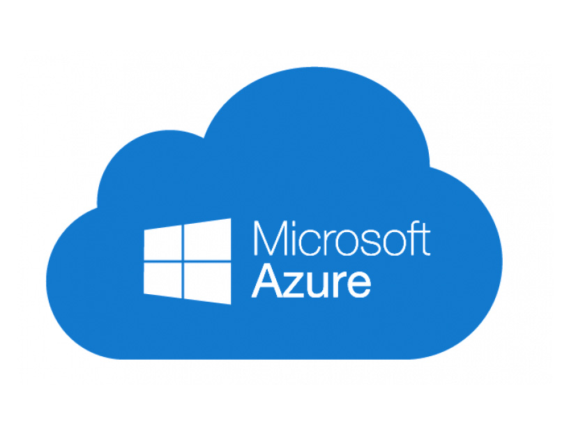

A computação em nuvem é o fornecimento de serviços de computação, incluindo servidores, armazenamento, bancos de dados, sistema de rede, software, análise e inteligência, pela Internet (“a nuvem”) para oferecer inovações mais rápidas, recursos flexíveis e economias de escala. Você normalmente paga apenas pelos serviços de nuvem que usa, ajudando a reduzir os custos operacionais, a executar sua infraestrutura com mais eficiência e a dimensionar conforme as necessidades da sua empresa mudam.
Plataformas

Microsoft Azure
O Microsoft Azure é uma plataforma de computação em nuvem da Microsoft. Ele oferece serviços de armazenamento, redes virtuais, inteligência artificial, bancos de dados e hospedagem de aplicativos por meio de data centers globais, permitindo que empresas aluguem poder computacional sem precisar manter servidores físicos próprios.
Principais Recursos e ServiçosComputação: Criação de máquinas virtuais com Windows ou Linux.
Armazenamento: Guarda segura de arquivos, dados e backups.
Bancos de Dados: Gerenciamento de dados em escala com suporte a SQL e outras ferramentas.
Inteligência Artificial: Ferramentas de IA e aprendizado de máquina integradas.
Google Cloud
O Google Cloud é uma plataforma de computação em nuvem criada pelo Google. Ela oferece diversos serviços pela internet que permitem armazenar dados, executar programas, criar aplicativos, analisar informações e utilizar recursos de inteligência artificial sem que seja necessário manter toda a infraestrutura em computadores próprios.
Uma das principais vantagens do Google Cloud é a possibilidade de aumentar ou diminuir os recursos utilizados de acordo com a necessidade. Isso permite que empresas tenham acesso a servidores, armazenamento e outras ferramentas sem precisar comprar e manter equipamentos físicos. Além disso, o Google Cloud possui recursos de segurança, monitoramento e gerenciamento de dados.
Servidores: Oferece máquinas virtuais para executar programas e sistemas.
Inteligência Artificial: Possui ferramentas para criar soluções com IA.
Big Data: Permite analisar grandes quantidades de dados.
Segurança: Conta com recursos para proteger informações e sistemas.